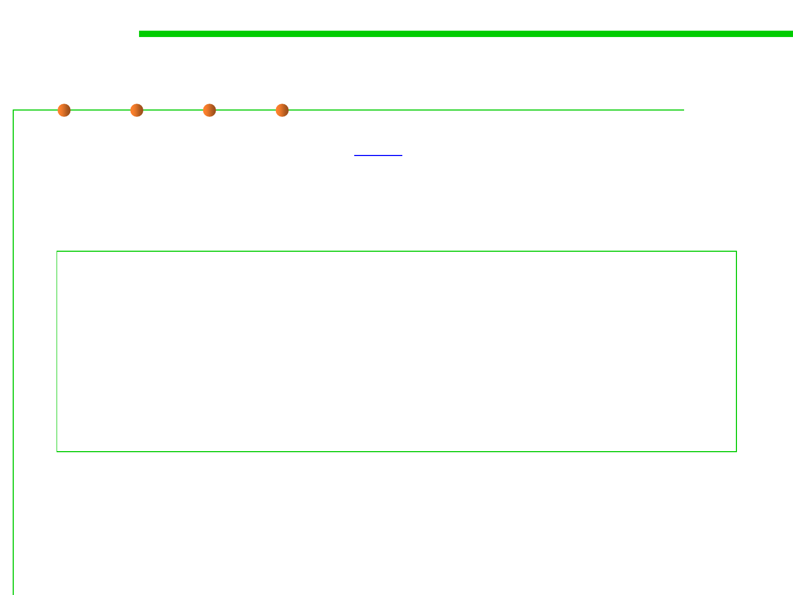

Option A
6.1 Metrics and Construction Principles for Maintainability
▪ JavaScript code modifies the style attribute of HTML element.
function highlight() {
document.getElementById("title").style.color="red";
document.getElementById("title").style.fontStyle="italic";
}
function normal() {
document.getElementById("title").style.color="inherit";
document.getElementById("title").style.fontStyle="normal";
}
base.js